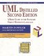
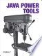
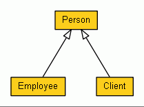
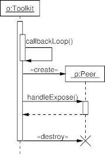

Automated Drawing of UML Diagrams

UMLGraph allows the declarative specification and drawing of UML class and sequence diagrams. The current features are part of an ongoing effort aiming to provide support for all types UML diagrams. An IEEE Software article titled On the declarative specification of models explains the rationale behind this approach. The tehnology behind UMLGraph was used to draw many of the diagrams appearing in the award-winning books Code Quality: The Open Source Perspective (Addison Wesley, 2006) and Code Reading: The Open Source Perspective (Addison Wesley, 2003). In addition, the UMLGraphDoc doclet included in this distribution automatically adds UML diagrams to javadoc documentation.
Many programs build on UMLGraph; follow this link for more details.
 Martin Fowler, the author of UML Distilled, writes:
I thought I'd send you a note saying how much I enjoyed discovering UML Graph. I've long fancied a text based way of describing UML diagrams, but never felt sufficiently time-rich to develop anything.
 UMLGraph is also described in O'Reilly's Java Power Tools book.
Class Diagrams
One specifies a class diagram using the Java syntax complemented by javadoc tags. Running the UmlGraph doclet on the specification will generate a Graphviz diagram specification that can be automatically processed to create Postscript, GIF, SVG, JPEG, fig, or Framemaker drawings.The following is an example of a class diagram specification and the resulting UML diagram:
class Person {
String Name;
}
class Employee extends Person {}
class Client extends Person {}
|  |
Sequence Diagrams
One specifies a sequence diagram using pic macros to define objects and method invocations. The GNU plotutils pic2plot program can then process the sequence diagram to create a PNG, PNM, (pseudo)GIF, SVG, AI, Postscript, CGM, FIG, PCL, HPGL, Regis, or TEK drawing.The following is an example of a sequence diagram specification and the resulting UML diagram:
# Define the objects object(O,"o:Toolkit"); placeholder_object(P); step(); # Activation and messages active(O); message(O,O,"callbackLoop()"); create_message(O,P,"p:Peer"); message(O,P,"handleExpose()"); active(P); return_message(P,O,""); inactive(P); destroy_message(O,P); inactive(O); # Complete the lifeline of O step(); complete(O); |  |